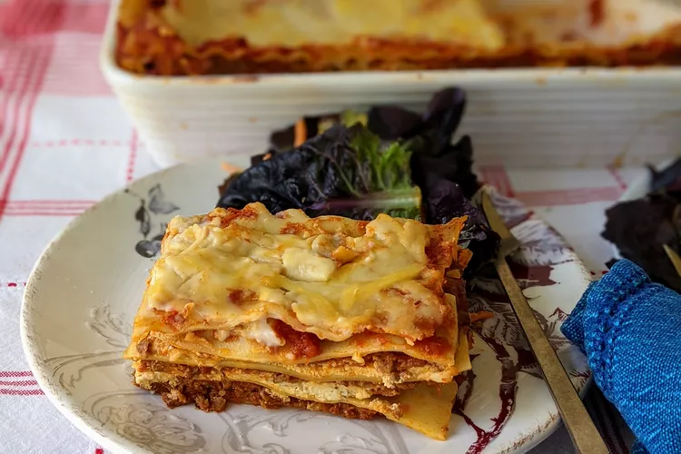

Long Island Tea Recipe

Description
There are a few impostors out there that claim to be Long Island Iced Teas.
In actuality, there is only one correct way to make a LIIT... and this is it!
Ingredients
- ½ fluid ounce vodka
- ½ fluid ounce rum
- ½ fluid ounce gin
- ½ fluid ounce tequila
- ½ fluid ounce triple sec (orange-flavored liqueur)
- 1 fluid ounce sweet and sour mix
- 1 fluid ounce cola, or to taste
- 1 lemon slice
Steps
- Gather all ingredients.
- Fill a cocktail shaker with ice. Pour vodka, rum, gin, tequila, triple sec,
and sour mix over ice; cover and shake.
- Pour cocktail into a Collins or hurricane glass; top with splash of cola for color.
Garnish with a lemon slice.
- Garnish with lemon slices and mint leaves!